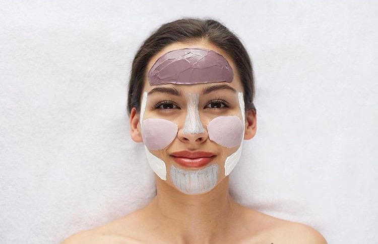

Мультимаскинг
Мультимаскинг — это техника одновременного нанесения нескольких типов масок на разные зоны лица и новый вид Instagram-обсессии.
На каждой зоне лица свой тип кожи: в области щек она сухая, а в зоне крыльев носа и на лбу — жирная или проблемная. Жирная требует ухода с применением подсушивающих масок, что для возрастной кожи не подходит, так как ухудшает ее состояние. Для поддержания упругости очень важно увлажнение кожи. Решение — наносить разные типы масок на различные участки лица.
Нанесение одновременно нескольких масок на лицо выглядит как сложная мозаика, но только при таком подходе вы получаете тот результат, которого требует красота.

Т-зона
Для жирной и пористой кожи на лице подходят очищающие и себорегулирующие маски. Они сужают поры и слегка подсушивают воспаления. Мы используем маски, в составе которых присутствуют кислоты, глина, древесный уголь, каолин, цинк и прочие очищающие и регулирующие выделение кожного сала ингредиенты.
Область вокруг глаз
Эта нежная часть лица подвержена отекам, поэтому питайте ее дренажными гелевыми и другими легкими по текстуре масками на основе кофеина, экстракта гинкго билоба и освежающих компонентов вроде огурца.
Область щек
В этой зоне лица коже требуется увлажнение и тонизация, поэтому косметологи советуют выбирать питательные и пробуждающие маски для области щек с витамины А, С и Е, растительные компоненты.
Овал лица
Мы используем коллагеновые маски, которые оказывают мощный лифтинговый эффект, сужают поры и расширенные сосуды. А также, альгинатные маски, которые оказывают лимфодренажный эффект, подтягивают контуры лица, сужают и очищают поры